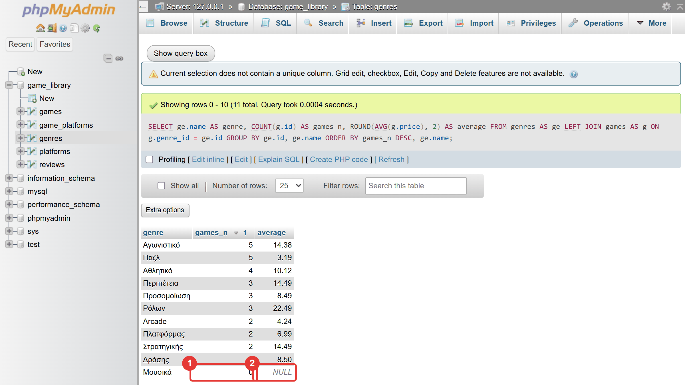
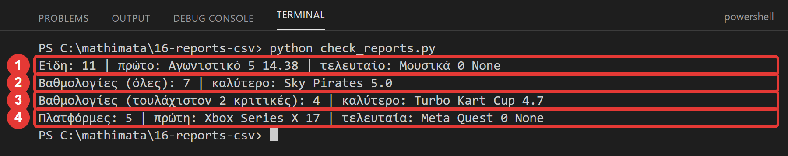
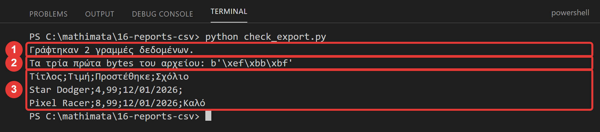
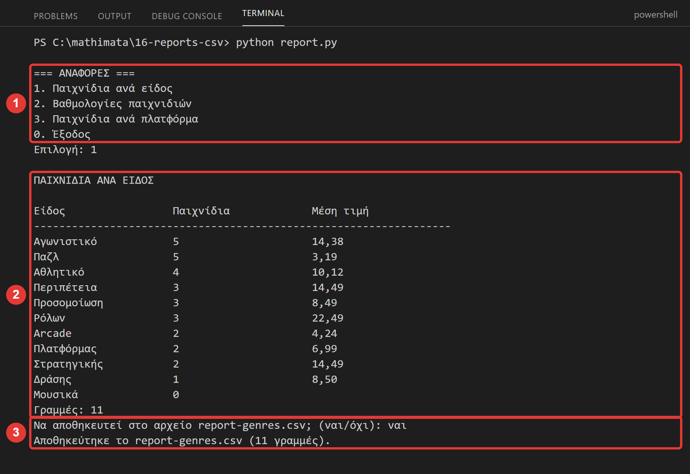
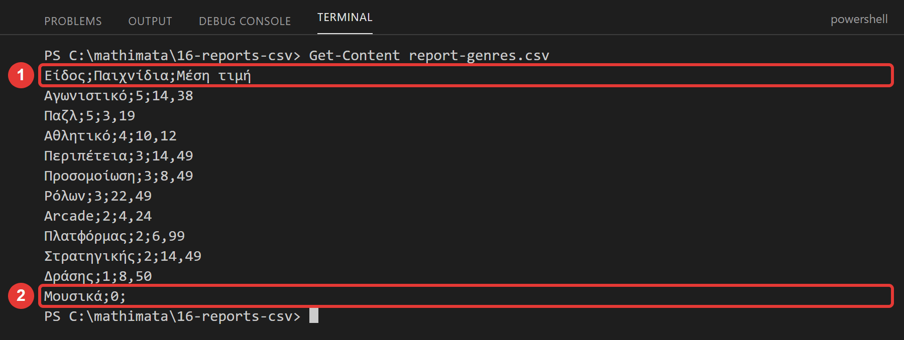

Μάθημα 16: Αναφορές και εξαγωγή σε CSV¶
Βάση δεδομένων και Python: αναφορές με GROUP BY και JOIN, το HAVING, η παγίδα των αθροισμάτων, και εξαγωγή σε αρχείο CSV με το module csv
Διάρκεια: 2 κύκλοι × περίπου 45′ εργασία (2 διδακτικές ώρες)
Φύλλο εργασίας
Αυτή η σελίδα εξηγεί τις έννοιες. Οι ασκήσεις και οι οδηγίες για κάθε κύκλο βρίσκονται στο Φύλλο εργασίας 16. Δούλεψε με τις δύο σελίδες ανοιχτές.
Αρχεία εργαστηρίου¶
| Αρχείο | Κύκλος |
|---|---|
| 01-start-state.sql | πριν αρχίσεις |
| 02-reports.sql | 1 |
| reports.py | 1 |
| check_reports.py | 1 |
| export.py | 2 |
| check_export.py | 2 |
| report.py | 2 |
| config.py, db.py, ui.py | ίδια με το Μάθημα 15 (δεν έχουν κενά) |
Η αποστολή¶
Μια βάση δεδομένων δεν αποθηκεύει μόνο στοιχεία: απαντά σε ερωτήσεις των ανθρώπων που τη χρησιμοποιούν. Ο υπεύθυνος της βιβλιοθήκης ρωτά: «Πόσα παιχνίδια έχει κάθε είδος; Ποια παιχνίδια έχουν την καλύτερη βαθμολογία; Πόσα παιχνίδια έχει κάθε πλατφόρμα;» και θέλει την απάντηση σε ένα αρχείο που ανοίγει στο Excel. Τέτοιες απαντήσεις λέγονται αναφορές (reports): συγκεντρωτικά αποτελέσματα (πλήθη, μέσοι όροι, σύνολα) ανά ομάδα.
Σήμερα:
- γράφεις τις αναφορές με
GROUP BYκαιJOIN(όσα έμαθες στα Μαθήματα 10, 12 και 14), - τις βάζεις σε συναρτήσεις που επιστρέφουν δεδομένα, όπως στο Μάθημα 15, και
- φτιάχνεις ένα δεύτερο πρόγραμμα, που ξαναχρησιμοποιεί τα modules σου και γράφει την αναφορά σε αρχείο CSV.
Στο τέλος θα μπορείς¶
- να γράφεις αναφορές με
GROUP BY, συναρτήσεις συγκέντρωσης καιJOIN, και να διαλέγειςINNER JOINήLEFT JOIN. - να δείχνεις και τις ομάδες χωρίς στοιχεία (πλήθος
0) μεLEFT JOINκαιCOUNT(στήλη). - να φιλτράρεις ομάδες με
HAVING, με τιμή που δίνει ο χρήστης. - να αναγνωρίζεις την παγίδα του πολλαπλασιασμού στα αθροίσματα μετά από
JOIN. - να γράφεις αρχεία από την Python με
with open(…)και το modulecsv. - να δημιουργείς CSV που ανοίγει σωστά στο ελληνικό Excel (διαχωριστής, κωδικοποίηση, υποδιαστολή).
- να φτιάχνεις δεύτερο πρόγραμμα που ξαναχρησιμοποιεί τα
dbκαιui, χωρίς αντιγραφή κώδικα.
Πριν αρχίσεις¶
- Ξεκίνα τη MySQL και τον Apache από το XAMPP Control Panel.
- Φτιάξε έναν φάκελο
16-reports-csvμέσα στον φάκελο των μαθημάτων και κατέβασε εκεί τα δέκα αρχεία του πίνακα. Κράτησε ακριβώς τα ονόματα. Όλα τα.pyστον ίδιο φάκελο, όπως στο Μάθημα 15. Άνοιξε τον φάκελο στο VS Code και άνοιξε τερματικό. - Φέρε τη βάση στην κατάσταση εκκίνησης: στο phpMyAdmin επίλεξε τη βάση
game_library, άνοιξε την καρτέλα Import, διάλεξε το01-start-state.sqlκαι πάτα Import. - Έλεγξε στην καρτέλα Browse ότι ο
gamesέχει 30 γραμμές, οgenres11, οreviews12, οplatforms5 και οgame_platforms63.
Το αρχείο εκκίνησης σβήνει τα δεδομένα σου
Το 01-start-state.sql σβήνει τους πίνακες της βάσης και τους φτιάχνει από την αρχή. Σήμερα δεν αλλάζει η δομή της βάσης, αλλά αν χαλάσεις δεδομένα, τρέξε το ξανά.
Ο κύκλος εργασίας
Πρόβλεψη → εκτέλεση → σύγκριση → εξήγηση. Σήμερα πρόβλεψε πόσες γραμμές θα έχει μια αναφορά και τι αριθμούς θα δώσουν οι συναρτήσεις συγκέντρωσης.
Κύκλος 1 — Αναφορές με GROUP BY και JOIN¶
Σε αυτόν τον κύκλο γράφεις τις αναφορές σε SQL και μετά τις βάζεις σε συναρτήσεις της Python.
1.1 GROUP BY με JOIN¶
Η GROUP BY φτιάχνει μία γραμμή για κάθε ομάδα και οι συναρτήσεις COUNT, AVG, SUM υπολογίζουν πάνω στην ομάδα (Μάθημα 10). Για να έχει η αναφορά ονόματα αντί για αριθμούς,
ενώνεις τους πίνακες με JOIN (Μαθήματα 12 και 14):
SELECT ge.name AS genre, COUNT(*) AS games_n
FROM games AS g
JOIN genres AS ge ON g.genre_id = ge.id
GROUP BY ge.id, ge.name
ORDER BY games_n DESC, ge.name;
Ομαδοποιούμε με το id και το όνομα του είδους (GROUP BY ge.id, ge.name): το id είναι αυτό που ξεχωρίζει τα είδη (δύο είδη θα μπορούσαν να έχουν ίδιο όνομα), και το
name είναι αυτό που φαίνεται στην αναφορά. Κάθε στήλη του SELECT είναι είτε στο GROUP BY είτε μέσα σε συνάρτηση συγκέντρωσης.
1.2 Και οι ομάδες που δεν έχουν στοιχεία¶
Το παραπάνω ερώτημα δίνει 10 γραμμές: λείπει το είδος «Μουσικά», γιατί δεν έχει παιχνίδια και ο INNER JOIN δεν το κρατά. Μια αναφορά που λέει «κάθε είδος» πρέπει να το δείχνει με 0.
Το ξέρεις από το Μάθημα 12: LEFT JOIN από τον πίνακα που κρατάς και COUNT(στήλη) (όχι COUNT(*)):
SELECT ge.name AS genre, COUNT(g.id) AS games_n, ROUND(AVG(g.price), 2) AS average
FROM genres AS ge
LEFT JOIN games AS g ON g.genre_id = ge.id
GROUP BY ge.id, ge.name
ORDER BY games_n DESC, ge.name;
Το «Μουσικά» βγαίνει με games_n ίσο με 0 (το COUNT(g.id) δεν μετρά τα NULL) και με μέση τιμή NULL (δεν υπάρχουν τιμές για μέσο όρο). Στην Python το NULL θα γίνει None.

1.3 Φίλτρο στις ομάδες: HAVING¶
Το WHERE φιλτράρει γραμμές πριν φτιαχτούν οι ομάδες. Το HAVING φιλτράρει ομάδες μετά τον υπολογισμό (Μάθημα 10). Έτσι ζητάς «μόνο τα είδη με τουλάχιστον 4 παιχνίδια» ή «μόνο τα
παιχνίδια με τουλάχιστον 2 κριτικές»:
SELECT g.title, COUNT(*) AS reviews_n, ROUND(AVG(r.stars), 1) AS average_stars
FROM games AS g
JOIN reviews AS r ON r.game_id = g.id
GROUP BY g.id, g.title
HAVING COUNT(*) >= 2
ORDER BY average_stars DESC, g.title;
Ένας μέσος όρος από μία κριτική δεν λέει πολλά: το «Sky Pirates» έχει 5.0 από μία μόνο κριτική. Γι' αυτό το HAVING με ελάχιστο πλήθος είναι συνηθισμένο στις βαθμολογίες.
1.4 Η παγίδα: το JOIN πολλαπλασιάζει και τα αθροίσματα¶
Στο Μάθημα 14 είδες ότι ένα JOIN με σχέση «πολλά» επαναλαμβάνει τις γραμμές (63 αντί για 27 παιχνίδια). Αυτό επηρεάζει και τις συναρτήσεις συγκέντρωσης:
| Ερώτημα | Αποτέλεσμα |
|---|---|
SELECT SUM(price) FROM games |
324.66 (η σωστή συνολική τιμή των 30 παιχνιδιών) |
SELECT SUM(g.price) FROM games AS g JOIN game_platforms AS gp ON gp.game_id = g.id |
753.49 (κάθε τιμή μετρήθηκε μία φορά για κάθε πλατφόρμα του παιχνιδιού) |
Τα 753.49 είναι λάθος για το «πόση είναι η συνολική τιμή των παιχνιδιών», και δεν δίνει σφάλμα. Ο κανόνας: πριν αθροίσεις μετά από JOIN, ρώτα «πόσες φορές εμφανίζεται κάθε γραμμή μου;».
Αν ο JOIN τη διπλασιάζει, ή υπολογίζεις χωρίς JOIN, ή μετράς με COUNT(DISTINCT …). (Στην αναφορά «ανά πλατφόρμα» το SUM ή το AVG είναι σωστά, γιατί ομαδοποιείς ανά πλατφόρμα: κάθε παιχνίδι
μετρά μία φορά σε κάθε πλατφόρμα του, και αυτό ζητάς.)
Στάδιο 1 — Αναφορές σε SQL¶
Άνοιξε το 02-reports.sql. Συμπλήρωσε τα πέντε κενά (____) και τρέξε τις εντολές μία-μία, με τη σειρά. Πρόβλεψε πρώτα πόσες γραμμές θα βγουν.
-- Στάδιο 1 — Αναφορές με GROUP BY και JOIN.
--
-- Πριν αρχίσεις: τρέξε το 01-start-state.sql (καρτέλα Import). Τα ερωτήματα δεν αλλάζουν δεδομένα.
--
-- Πώς το τρέχεις:
-- 1. Συμπλήρωσε τα κενά (____) σε έναν επεξεργαστή κειμένου.
-- 2. Τρέξε κάθε εντολή ΞΕΧΩΡΙΣΤΑ στην καρτέλα SQL της βάσης game_library, με τη σειρά.
-- 3. ΠΡΩΤΑ πρόβλεψε τι θα γίνει: πόσες γραμμές θα έχει το αποτέλεσμα και τι αριθμούς θα δώσουν οι συναρτήσεις.
-- Ερώτημα 1 (έτοιμο): πόσα παιχνίδια έχει κάθε είδος; INNER JOIN και GROUP BY με το ΟΝΟΜΑ του είδους.
-- Πόσες γραμμές βγαίνουν; Λείπει κάποιο είδος;
SELECT ge.name AS genre, COUNT(*) AS games_n
FROM games AS g
JOIN genres AS ge ON g.genre_id = ge.id
GROUP BY ge.id, ge.name
ORDER BY games_n DESC, ge.name;
-- Ερώτημα 2: ΟΛΑ τα είδη, με πλήθος και μέση τιμή. LEFT JOIN από τον πίνακα που κρατάς (genres) και COUNT(g.id) (όχι COUNT(*))
SELECT ge.name AS genre, COUNT(____.id) AS games_n, ROUND(AVG(g.price), 2) AS average
FROM genres AS ge
____ JOIN games AS g ON g.genre_id = ge.id
GROUP BY ge.id, ge.name
ORDER BY games_n DESC, ge.name;
-- Ερώτημα 3: μόνο τα είδη με τουλάχιστον 4 παιχνίδια. Το φίλτρο για ΟΜΑΔΕΣ είναι το HAVING (Μάθημα 10)
SELECT ge.name AS genre, COUNT(g.id) AS games_n
FROM genres AS ge
LEFT JOIN games AS g ON g.genre_id = ge.id
GROUP BY ge.id, ge.name
HAVING COUNT(g.id) >= ____
ORDER BY games_n DESC, ge.name;
-- Ερώτημα 4: βαθμολογία ανά παιχνίδι: πλήθος κριτικών και μέσος όρος αστεριών (ένα δεκαδικό), υψηλότερος πρώτα
SELECT g.title, COUNT(*) AS reviews_n, ROUND(____(r.stars), 1) AS average_stars
FROM games AS g
JOIN reviews AS r ON r.game_id = g.id
GROUP BY g.id, g.title
ORDER BY average_stars DESC, g.title;
-- Ερώτημα 5: πόσα παιχνίδια και ποια μέση τιμή έχει κάθε πλατφόρμα, ΜΑΖΙ με την πλατφόρμα που δεν έχει παιχνίδια:
-- δύο LEFT JOIN, ξεκινώντας από τον πίνακα των πλατφορμών
SELECT p.name AS platform, COUNT(g.id) AS games_n, ROUND(AVG(g.price), 2) AS average
FROM platforms AS p
LEFT JOIN game_platforms AS gp ON gp.platform_id = p.id
LEFT JOIN games AS g ON gp.game_id = ____.id
GROUP BY p.id, p.name
ORDER BY games_n DESC, p.name;
-- Ερώτημα 6 (έτοιμο): πόση είναι η συνολική τιμή των παιχνιδιών; (το σωστό άθροισμα)
SELECT SUM(price) AS total, COUNT(*) AS games_n
FROM games;
-- Ερώτημα 7 (έτοιμο): ΠΑΓΙΔΑ. Το ίδιο SUM, αλλά μετά από JOIN με τον πίνακα σύνδεσης. Τι έγινε με το άθροισμα; Δες και το rows_n
SELECT SUM(g.price) AS wrong_total, COUNT(*) AS rows_n
FROM games AS g
JOIN game_platforms AS gp ON gp.game_id = g.id;
1.5 Οι αναφορές ως συναρτήσεις: reports.py¶
Όπως στο Μάθημα 15, βάζουμε κάθε αναφορά σε μια συνάρτηση πρόσβασης: παίρνει τη σύνδεση και επιστρέφει λίστα από λεξικά. Δεν τυπώνει και δεν γράφει αρχεία. Αυτό έχει σημασία σήμερα: τα ίδια δεδομένα πρέπει να πάνε και στην οθόνη και στο αρχείο CSV, και κάθε φορά διαφορετικό κομμάτι κώδικα αναλαμβάνει το «τι κάνουμε με αυτά».
Δύο σημεία:
- Η
ratings_per_game(connection, min_reviews)βάζει το ελάχιστο πλήθος κριτικών ως παράμετρο τουHAVING … >= %s, όπως έβαζες παραμέτρους στοWHERE. - Οι μέσοι όροι είναι
Decimalκαι, για μια ομάδα χωρίς στοιχεία,None(τοNULLτης βάσης). Ό,τι τα χρησιμοποιεί πρέπει να το περιμένει.
"""Οι εντολές SQL των αναφορών.
Όπως το queries.py του Μαθήματος 15: κάθε συνάρτηση παίρνει τη σύνδεση και ΕΠΙΣΤΡΕΦΕΙ δεδομένα (λίστα από λεξικά). Δεν τυπώνει
και δεν γράφει αρχεία: αυτά τα κάνουν το export.py και το report.py. Έτσι τα ίδια δεδομένα μπορούν να πάνε και στην οθόνη και σε CSV.
Συμπλήρωσε τα τέσσερα κενά (____).
"""
def games_per_genre(connection):
"""Για κάθε είδος, ΚΑΙ για όσα δεν έχουν παιχνίδια: πλήθος παιχνιδιών και μέση τιμή. Λεξικά: genre, games_n, average."""
# TODO 1: αποτελέσματα ως λεξικά (το ξέρεις από το Μάθημα 13)
with connection.cursor(dictionary=____) as cursor:
cursor.execute(
"SELECT ge.name AS genre, COUNT(g.id) AS games_n, ROUND(AVG(g.price), 2) AS average "
"FROM genres AS ge LEFT JOIN games AS g ON g.genre_id = ge.id "
"GROUP BY ge.id, ge.name ORDER BY games_n DESC, ge.name"
)
return cursor.fetchall()
def ratings_per_game(connection, min_reviews):
"""Για κάθε παιχνίδι με τουλάχιστον min_reviews κριτικές: πλήθος κριτικών και μέσος όρος αστεριών.
Λεξικά: title, reviews_n, average_stars (το average_stars είναι Decimal).
"""
with connection.cursor(dictionary=True) as cursor:
cursor.execute(
"SELECT g.title, COUNT(*) AS reviews_n, ROUND(AVG(r.stars), 1) AS average_stars "
"FROM games AS g JOIN reviews AS r ON r.game_id = g.id "
"GROUP BY g.id, g.title "
"HAVING COUNT(*) >= %s "
"ORDER BY average_stars DESC, g.title",
# TODO 2: η τιμή της παραμέτρου %s του HAVING (πλειάδα με μία τιμή)
(____,),
)
return cursor.fetchall()
def games_per_platform(connection):
"""Για κάθε πλατφόρμα, ΚΑΙ για όσες δεν έχουν παιχνίδια: πλήθος παιχνιδιών και μέση τιμή. Λεξικά: platform, games_n, average."""
with connection.cursor(dictionary=True) as cursor:
cursor.execute(
"SELECT p.name AS platform, COUNT(g.id) AS games_n, ROUND(AVG(g.price), 2) AS average "
"FROM platforms AS p "
"LEFT JOIN game_platforms AS gp ON gp.platform_id = p.id "
"LEFT JOIN games AS g ON gp.game_id = g.id "
# TODO 3: ομαδοποίηση με το id και το όνομα της πλατφόρμας
"GROUP BY p.id, p.____ "
"ORDER BY games_n DESC, p.name"
)
# TODO 4: όλες οι γραμμές ως λίστα (από λεξικά)
return cursor.____()
Στάδιο 2 — Οι αναφορές στην Python¶
Άνοιξε το reports.py. Συμπλήρωσε τα τέσσερα κενά και τρέξε το check_reports.py (δεν έχει κενά):

Συνέχισε στο Φύλλο εργασίας.
Κύκλος 2 — Αρχεία CSV και δεύτερο πρόγραμμα¶
Στον δεύτερο κύκλο γράφεις αρχεία από την Python και φτιάχνεις το πρόγραμμα των αναφορών.
2.1 Αρχεία στην Python: with open(…)¶
Για να γράψεις ένα αρχείο, το ανοίγεις, γράφεις, και το κλείνεις. Όπως με τη σύνδεση της βάσης, το with φροντίζει να κλείσει πάντα:
- Το πρώτο όρισμα είναι το όνομα (ή η διαδρομή) του αρχείου. Χωρίς φάκελο, γράφεται στον τρέχοντα φάκελο, δηλαδή εκεί που έτρεξες το πρόγραμμα.
- Το δεύτερο είναι ο τρόπος (mode):
"w"(write) δημιουργεί το αρχείο ή αντικαθιστά όποιο υπήρχε (χωρίς ερώτηση!)·"r"(read) το διαβάζει. - Το
encodingλέει πώς γράφονται οι χαρακτήρες. Για ελληνικά χρησιμοποιούμε UTF-8.
Το "w" σβήνει ό,τι υπήρχε
Αν το αρχείο υπάρχει ήδη, το "w" το αδειάζει πριν γράψει. Γι' αυτό το πρόγραμμα των αναφορών ρωτά πριν αποθηκεύσει.
2.2 Το CSV¶
Το CSV (comma-separated values) είναι ένα αρχείο κειμένου με έναν πίνακα: μία γραμμή για κάθε γραμμή του πίνακα, και οι στήλες χωρισμένες με έναν διαχωριστή. Έτσι είναι η αναφορά μας:
Το Python έχει έτοιμο το module csv, που φροντίζει τις λεπτομέρειες (π.χ. κείμενα που περιέχουν τον διαχωριστή). Το χρησιμοποιείς έτσι:
import csv
with open("report.csv", "w", newline="", encoding="utf-8-sig") as file:
writer = csv.writer(file, delimiter=";")
writer.writerow(["Είδος", "Παιχνίδια"]) # μία γραμμή
writer.writerow(["Παζλ", 5])
2.3 Το CSV και το ελληνικό Excel¶
Το Excel θα ανοίξει το αρχείο με διπλό κλικ μόνο αν «συμφωνείτε» για τέσσερα πράγματα. Σε έναν υπολογιστή με ελληνικές ρυθμίσεις:
| Θέμα | Τι θέλει το ελληνικό Excel | Πώς το κάνουμε |
|---|---|---|
| Διαχωριστής στηλών | ; (ερωτηματικό), όχι κόμμα |
csv.writer(file, delimiter=";") |
| Ελληνικά γράμματα | UTF-8 με BOM (ένα αόρατο σήμα στην αρχή του αρχείου) | encoding="utf-8-sig" |
| Δεκαδικά | υποδιαστολή κόμμα (3,19) |
str(value).replace(".", ",") |
| Ημερομηνίες | ΗΗ/ΜΜ/ΕΕΕΕ |
value.strftime("%d/%m/%Y") |
Επιπλέον, το newline="" το ζητά το module csv (αλλιώς τα Windows προσθέτουν κενές γραμμές). Και μια τιμή None γράφεται ως κενό κελί.
Αν το Excel σου έχει άλλες ρυθμίσεις
Οι ρυθμίσεις της γλώσσας και της περιοχής του υπολογιστή αλλάζουν τον διαχωριστή και την υποδιαστολή. Αν το αρχείο ανοίξει σε μία στήλη, ή τα δεκαδικά φαίνονται λάθος, άλλαξε το
delimiter ή το κόμμα των δεκαδικών, ή άνοιξέ το με Δεδομένα → Από κείμενο/CSV, όπου διαλέγεις τον διαχωριστή. Σε κάθε επεξεργαστή κειμένου (Σημειωματάριο, VS Code) φαίνεται κανονικά.
2.4 Το export.py¶
Το export.py έχει δύο συναρτήσεις:
- Η
format_value(value)μετατρέπει μία τιμή της βάσης σε κείμενο:None→ κενό,Decimal→ με κόμμα,date→ΗΗ/ΜΜ/ΕΕΕΕ. Ο έλεγχος τύπου γίνεται με τηνisinstance(τιμή, τύπος), που απαντάTrue/False. - Η
write_csv(path, columns, rows)γράφει όλη την αναφορά. Τοcolumnsείναι λίστα από ζεύγη(κλειδί, τίτλος): το κλειδί ψάχνεται στο λεξικό κάθε γραμμής και ο τίτλος γράφεται στην επικεφαλίδα. Επιστρέφει πόσες γραμμές δεδομένων έγραψε.
"""Εξαγωγή αναφορών σε αρχείο CSV.
Το CSV (comma-separated values) είναι ένα αρχείο κειμένου με πίνακα: μία γραμμή για κάθε γραμμή του πίνακα, και οι στήλες
χωρισμένες με έναν διαχωριστή. Ανοίγει στο Excel και σε κάθε επεξεργαστή κειμένου.
Συμπλήρωσε τα πέντε κενά (____).
"""
import csv
from datetime import date
from decimal import Decimal
def format_value(value):
"""Μετατρέπει μια τιμή της βάσης σε κείμενο για το CSV και για την οθόνη."""
if value is None:
return ""
# TODO 1: έλεγχος τύπου: η τιμή είναι Decimal; (η isinstance(τιμή, τύπος) απαντά True ή False)
if isinstance(value, ____):
# Το ελληνικό Excel θέλει υποδιαστολή κόμμα (3,49) και όχι τελεία (3.49)
# TODO 2: το κείμενο που μπαίνει στη θέση της τελείας
return str(value).replace(".", "____")
if isinstance(value, date):
return value.strftime("%d/%m/%Y")
return str(value)
def write_csv(path, columns, rows):
"""Γράφει τις γραμμές rows (λίστα από λεξικά) στο αρχείο path, σε μορφή CSV.
Το columns είναι λίστα από ζεύγη (κλειδί του λεξικού, τίτλος της στήλης). Επιστρέφει πόσες γραμμές δεδομένων γράφτηκαν.
"""
# TODO 3: "w" = write (το αρχείο δημιουργείται ή αντικαθίσταται)· newline="" το ζητά το csv· το utf-8-sig βάζει ένα σήμα BOM, για να διαβάζει το Excel τα ελληνικά
with open(path, "____", newline="", encoding="utf-8-sig") as file:
# TODO 4: το αντικείμενο που γράφει γραμμές CSV· το ; είναι ο διαχωριστής στηλών του ελληνικού Excel
writer = csv.____(file, delimiter=";")
titles = []
for key, title in columns:
titles.append(title)
# TODO 5: μία γραμμή (η επικεφαλίδα) γράφεται με τη μέθοδο writerow
writer.____(titles)
for row in rows:
values = []
for key, title in columns:
values.append(format_value(row[key]))
writer.writerow(values)
return len(rows)
Στάδιο 3 — Το CSV¶
Άνοιξε το export.py. Συμπλήρωσε τα πέντε κενά και τρέξε το check_export.py (δεν έχει κενά). Γράφει ένα δοκιμαστικό report-test.csv με ψεύτικα δεδομένα και το διαβάζει πίσω, και δείχνει τα
τρία πρώτα bytes του αρχείου: αυτά είναι το BOM.

2.5 Το report.py: ένα δεύτερο πρόγραμμα¶
Το report.py είναι άλλο πρόγραμμα, δίπλα στην εφαρμογή. Δεν έχει δικό του κώδικα βάσης: κάνει import db και import ui του Μαθήματος 15, και import reports και import export των δικών
μας σημερινών modules. Αυτό ακριβώς σου υποσχέθηκαν τα modules: δεν αντιγράφεις κώδικα, τον ξαναχρησιμοποιείς.
Κάθε αναφορά περνά από τα ίδια βήματα: παίρνεις τα δεδομένα (reports), τα δείχνεις στην οθόνη (print_table), ρωτάς αν θα αποθηκευτούν και τα γράφεις (export):
def show_report(title, columns, rows, filename):
"""Εμφανίζει μια αναφορά στην οθόνη και ρωτά αν θα αποθηκευτεί σε αρχείο CSV."""
print()
print(title)
print_table(columns, rows)
answer = input(f"Να αποθηκευτεί στο αρχείο {filename}; (ναι/όχι): ")
# TODO 2: αποθηκεύουμε μόνο αν η απάντηση είναι «ναι»
if answer == "____":
# TODO 3: η συνάρτηση του export που γράφει το αρχείο CSV
count = export.____(filename, columns, rows)
print(f"Αποθηκεύτηκε το {filename} ({count} γραμμές).")
def main():
"""Το κύριο πρόγραμμα: ανοίγει τη σύνδεση και τρέχει το μενού των αναφορών."""
try:
# TODO 4: η συνάρτηση του db που ανοίγει σύνδεση (το with την κλείνει αυτόματα)
with db.____() as connection:
run_reports(connection)
except mysql.connector.Error as error:
print("Σφάλμα της βάσης:", error.msg)
print("Έλεγξε ότι η MySQL τρέχει στο XAMPP Control Panel.")
# TODO 5: το όνομα που έχει το __name__ όταν τρέχεις το αρχείο απευθείας (όπως στο Μάθημα 15)
if __name__ == "____":
main()
Στάδιο 4 — Το πρόγραμμα των αναφορών¶
Άνοιξε το report.py. Συμπλήρωσε τα πέντε κενά και τρέξε το από το τερματικό:
Διάλεξε την αναφορά 1 και απάντησε «ναι» στην ερώτηση. Θα δημιουργηθεί το report-genres.csv στον φάκελο. Δοκίμασε και τις άλλες.

2.6 Άνοιγμα του αρχείου¶
Το αρχείο CSV είναι κείμενο, οπότε το βλέπεις και με απλό επεξεργαστή: δες το στο VS Code, ή στο τερματικό με Get-Content report-genres.csv. Στο Excel: διπλό κλικ στο αρχείο (αν οι ρυθμίσεις είναι
ελληνικές), ή Δεδομένα → Από κείμενο/CSV.

Τα αρχεία των αναφορών δεν μπαίνουν στο git
Τα report-*.csv είναι αποτελέσματα και περιέχουν δεδομένα της βάσης, όχι κώδικα. Γι' αυτό το .gitignore του μαθήματος τα αγνοεί: δεν ανεβαίνουν σε αποθετήριο μαζί με τον κώδικα.
Συνέχισε στο Φύλλο εργασίας, Κύκλος 2.
Έλεγχος πριν ολοκληρώσεις¶
- □ Στο Στάδιο 1 είδες ότι ο
INNER JOINχάνει το «Μουσικά» και οLEFT JOINτο δείχνει με0καιNULL. - □ Είδες ότι το
SUMμετά απόJOINέδωσε 753.49 αντί για 324.66, και ξέρεις γιατί. - □ Το
check_reports.pyδείχνειNoneγια τη μέση τιμή του «Μουσικά» και του «Meta Quest». - □ Το
check_export.pyέδειξε το BOM, τα ερωτηματικά και τα κόμματα στα δεκαδικά. - □ Το
report.pyδημιούργησε αρχείαreport-….csvπου ανοίγουν σωστά (με ελληνικά). - □ Το
report.pyδεν έχει δικό του κώδικα βάσης: χρησιμοποιεί τα modules. - □ Όταν τελείωσες, σταμάτησες τον Apache και τη MySQL.
Για να θυμάσαι¶
- Μια αναφορά είναι συγκεντρωτικό αποτέλεσμα ανά ομάδα:
GROUP BY+COUNT/SUM/AVG+JOINγια τα ονόματα. Ομαδοποίησε μεidκαι όνομα (GROUP BY ge.id, ge.name). - Όταν θες και τις κενές ομάδες:
LEFT JOINαπό τον πίνακα που κρατάς καιCOUNT(στήλη)(όχιCOUNT(*)). Η μέση τιμή τους είναιNULL, δηλαδήNone. WHEREφιλτράρει γραμμές πριν τις ομάδες,HAVINGφιλτράρει ομάδες μετά.- Το
JOINπολλαπλασιάζει τις γραμμές και μαζί τα αθροίσματα. Πριν αθροίσεις, ρώτα πόσες φορές εμφανίζεται κάθε γραμμή· χρησιμοποίησεCOUNT(DISTINCT …)ή υπολόγισε χωρίςJOIN. - Οι συναρτήσεις αναφορών επιστρέφουν δεδομένα. Η οθόνη και το αρχείο είναι δουλειά άλλων.
with open(όνομα, "w", encoding=…) as file: γράφει αρχείο και το κλείνει πάντα. Το"w"αντικαθιστά ό,τι υπήρχε.- CSV με το module
csv:csv.writer(file, delimiter=";")καιwriter.writerow(λίστα). Για ελληνικό Excel:;,utf-8-sig, κόμμα στα δεκαδικά,newline="". - Ένα δεύτερο πρόγραμμα ξαναχρησιμοποιεί τα modules (
db,ui) χωρίς αντιγραφή κώδικα.
Λεξιλόγιο¶
αναφορά (report), ομάδα, GROUP BY, HAVING, πολλαπλασιασμός γραμμών, CSV, διαχωριστής (delimiter), κωδικοποίηση (encoding), UTF-8, BOM, open, mode ("w", "r"),
isinstance, csv.writer.
Δική σου εκδοχή¶
Αν τελειώσεις νωρίτερα, δούλεψε με μία αλλαγή τη φορά και τρέχε το πρόγραμμα μετά από κάθε αλλαγή:
- Πρόκληση 1: γράψε μια συνάρτηση
read_csv(path)(στοexport.py) που διαβάζει ένα αρχείο CSV και επιστρέφει τις γραμμές του ως λίστα από λίστες. Χρειάζεσαιopen(path, "r", newline="", encoding="utf-8-sig")καιcsv.reader(file, delimiter=";"). Δοκίμασέ τη στοreport-genres.csv. - Πρόκληση 2: το όνομα του αρχείου να έχει την ημερομηνία (π.χ.
report-genres-2026-11-04.csv), ώστε να μην αντικαθίσταται το παλιό. Χρησιμοποίησεdate.today()καιstrftime("%Y-%m-%d")(Μάθημα 9). - Πρόκληση 3: νέα αναφορά «Προσθήκες ανά μήνα»: πόσα παιχνίδια προστέθηκαν κάθε μήνα (
GROUP BY YEAR(added_on), MONTH(added_on)), από τοreports.pyμέχρι το μενού τουreport.pyκαι το CSV. Σε ποια αρχεία έκανες αλλαγές;